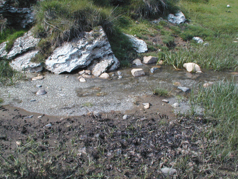
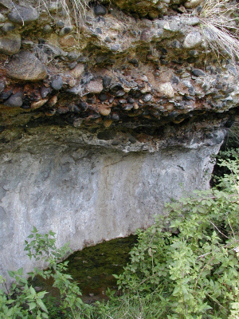

Vous êtes sur
http://perso.wanadoo.fr/martine.bruhat
Les sources des Rocs
Bleus
En continuant le chemin qui passe près des sources
du Saladis, on arrive au bord de l'Allier, rive gauche.
Des sources salées affleurent sous la falaise, les
moutons du parc voisin viennent y boire une eau saumâtre.

Traces de moutons dans la boue près de la
source la plus importante.

Tranche de falaise : la partie supérieure
est un conglomérat de galets unis par du calcaire
déposé par les sources au fil des
années. La partie inférieure, plus tendre, a
été grignotée par l'Allier.